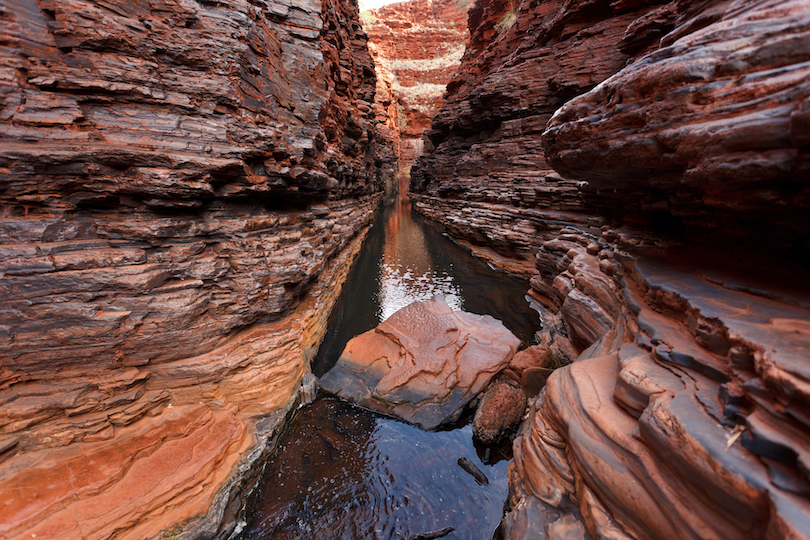
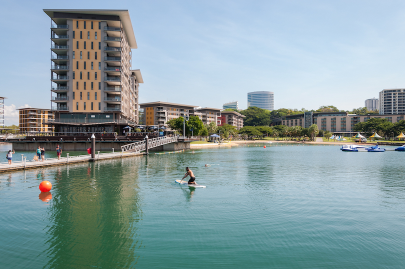
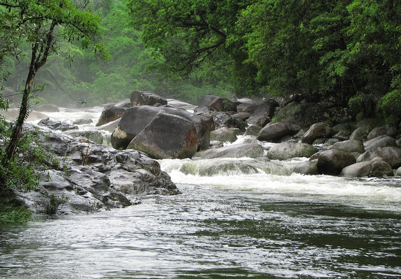

Karijini National Park
The second-largest national park in Western Australia, Karijini lies about a thousand kilometers to the north of the state’s capital, Perth. Centered around the Hamersley Ranges, it is very mountainous and known for the gorgeous gorges, slot canyons, and waterfalls that dot its confines.
Rising above the dark red hues of its rugged landscapes are the three highest peaks in the west of Australia. These make for some fantastic hiking, as do the narrow gorges and precipitous chasms snaking beneath them. Punctuating its semi-arid terrain are a series of hidden water holes and glittering waterfalls, which are amazingly refreshing to swim or bathe in after a dusty walk.
Besides the stunning scenery, Karijini National Park is home to more than 800 different plant species, as well as lots of incredible wildlife. While exploring the nature reserve, visitors may catch a glimpse of wallabies, echidnas, and red kangaroos.
Darwin
Hugging the coastline of Australia’s Top End, the region encompassing the Northern Territory, Darwin has long been the most international of the country’s major cities. Its close proximity to other countries in the Indian Ocean has made the city a transportation hub since its earliest days. Devastated during World War II and again in 1974 when struck by Cyclone Tracy, Darwin is a resilient town with a spirit that can’t be defeated. Today, the city of around 75,000 people is a popular holiday destination.
Darwin’s main natural attraction is its wide sandy beach lined with open-air beer bars, seafood restaurants and multinational shops. Twice the size of Sydney Harbor, Darwin Harbor attracts visitors too. Cruises lasting two to 12 hours are available for explorations of the region’s mangrove forest. In the evening, locals and visitors stroll down the city’s esplanade to enjoy films at the Deckchair Cinema, a large open-air theater located on the banks of harbor.
Darwin is also the hub for tours to famous Kakadu National Park as well as Litchfield National Park and Katherine Gorge. Whether watching crocodiles cavort in Crocodylus Park, cruising to the Aboriginal-owned Tiwi Islands or relaxing on the beach, there’s always something new to experience in tropical Darwin.
Daintreen National Park
Lying on the northeast coast of Australia in a national park of the same name, Daintree is one of the world’s oldest and most diverse tropical rainforests. Located in the state of Queensland, its fantastic fauna and flora and ancient ecosystems are incredible to explore, and home to lots of wildlife.
Daintree doesn’t consist solely of lush and verdant rainforest, but also includes rugged mountains, teeming rivers, rich coral reef systems, and beautiful beaches. Of these, Cape Tribulation is considered to boast some of the best white sandy beaches in Australia.
Best accessed from Cairns, around a three-hour drive away, Daintree Rainforest is a nature lover’s delight and has lots of fun outdoor activities for visitors to try. Besides hiking amid the dense undergrowth and going bird or wildlife watching, popular pastimes include paddleboarding, ziplining through the canopy, and cruising along one of its rivers.